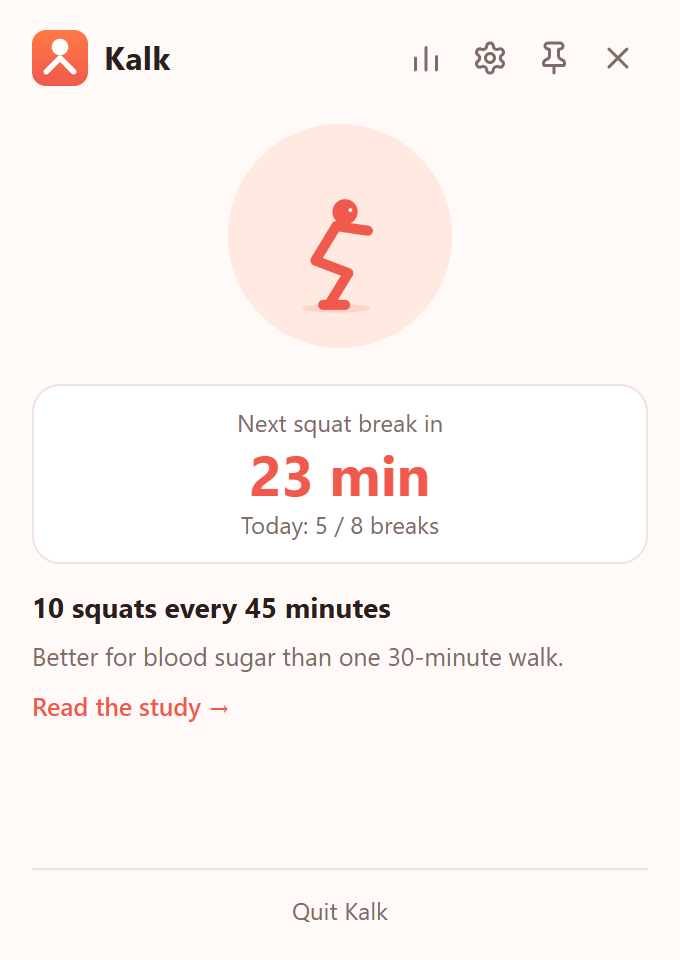
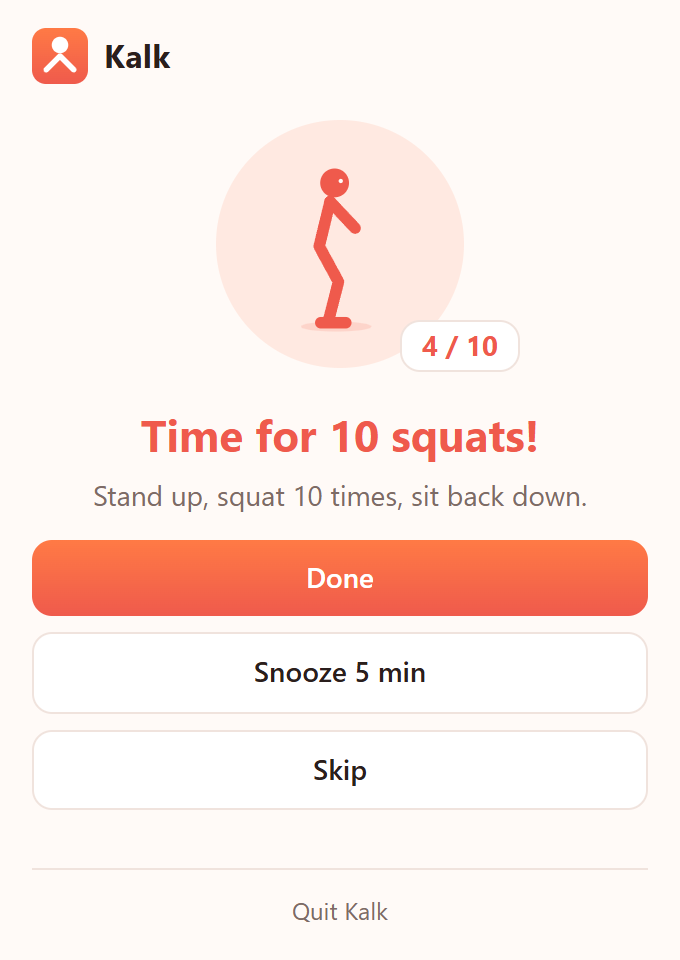
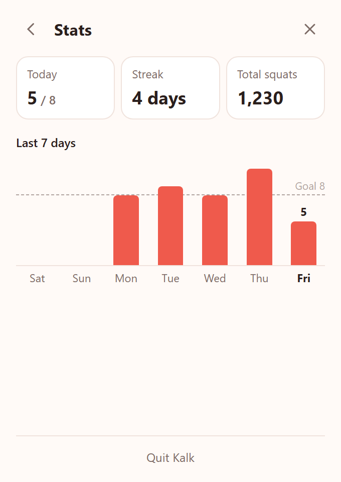

A tiny tray app that reminds you to do 10 squats after every 45 minutes at the computer. Just one minute, no gym, better blood sugar.
Windows 10/11 (Microsoft Store) · macOS 11+ · English & Türkçe



Short, frequent breaks beat one long walk.
A 2024 study compared four ways of spending 8.5 hours of sitting. Breaking it up with 10 squats — or a 3‑minute walk — every 45 minutes lowered the blood‑sugar response more than a single 30‑minute walk.
Small study: 18 men with overweight or obesity. Treat it as a nudge, not a promise. Read the paper (Scand J Med Sci Sports, 2024).
Kalk lives in your tray or menu bar. You'll only notice it when it's time to get up.
The timer only runs while you use the keyboard or mouse. Step away or sleep the machine and it starts over.
The reminder pops up by the tray with a chime but leaves your keyboard alone. Done, Snooze or Skip.
An animated character does the reps with a counter, so you don't have to count.
Active hours and days, plus Pause for 1 hour or for today, right from the tray menu.
Today against your goal, your streak, the last 7 days and every squat you've done.
Interval, reps, daily goal, snooze length, sound, launch at login. English and Türkçe.
Install it once. Kalk starts with your computer and takes it from there.
No account, no cloud, no telemetry. Kalk only checks how long ago you last touched the keyboard or mouse, never what you typed. Your settings and break log are local files.
Free and open source under the MIT license.